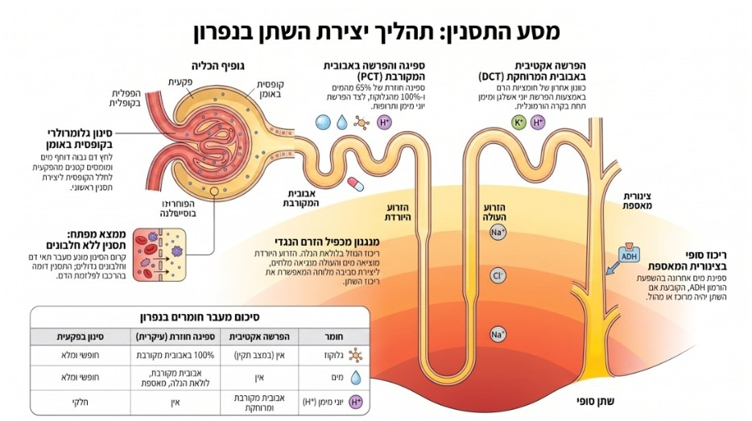
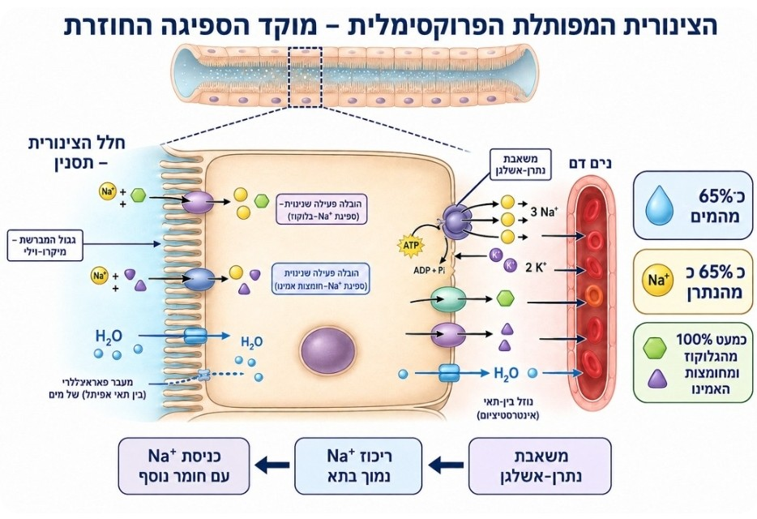
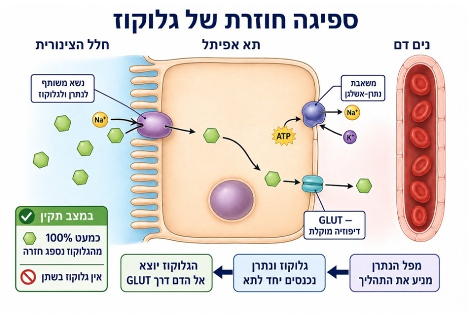
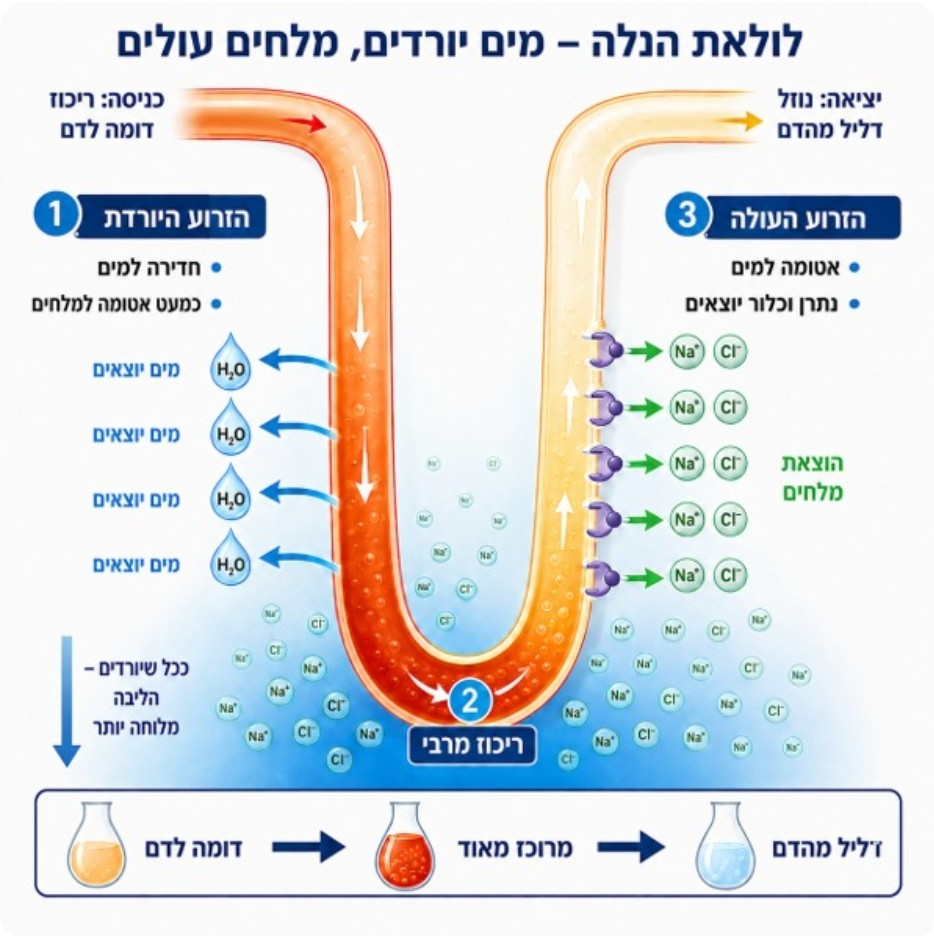
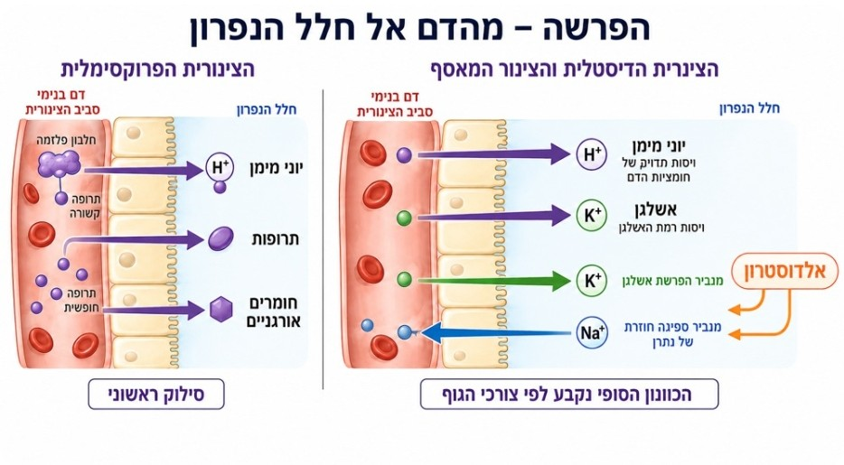
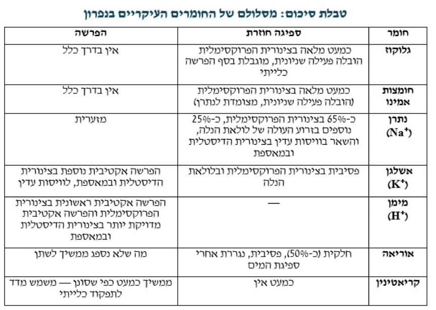
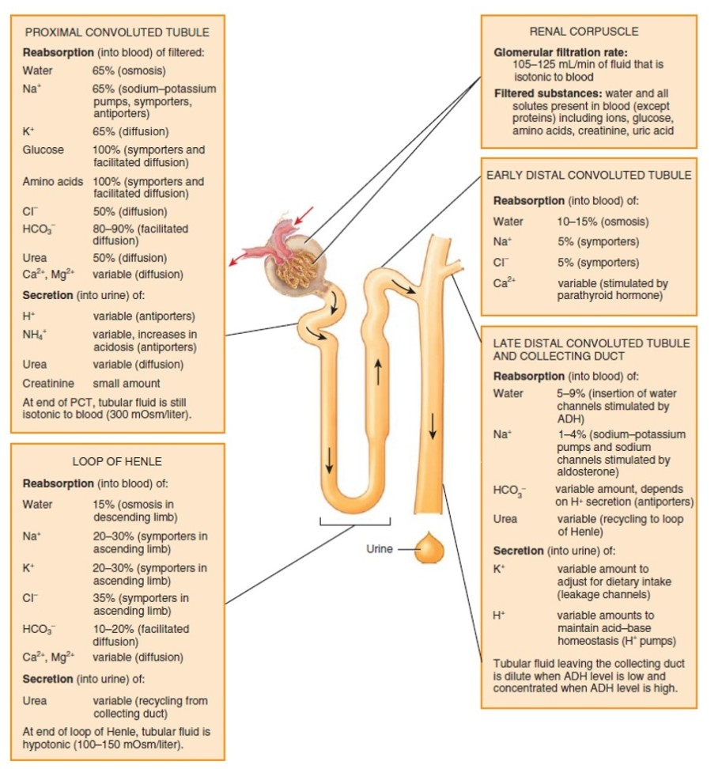

📁 נפרולוגיה · הכליה והנפרון
לחיצה על שקף פותחת אותו בגודל מלא

1. מסע התסנין: תהליך יצירת השתן בנפרון

2. הצינורית המפותלת הפרוקסימלית – מוקד הספיגה החוזרת

3. ספיגה חוזרת של גלוקוז

4. לולאת הנלה – מים יורדים, מלחים עולים

5. הפרשה – מהדם אל חלל הנפרון

6. טבלת סיכום: מסלולם של החומרים העיקריים בנפרון

7. תרשים מסכם (אנגלית): ספיגה והפרשה לאורך הנפרון